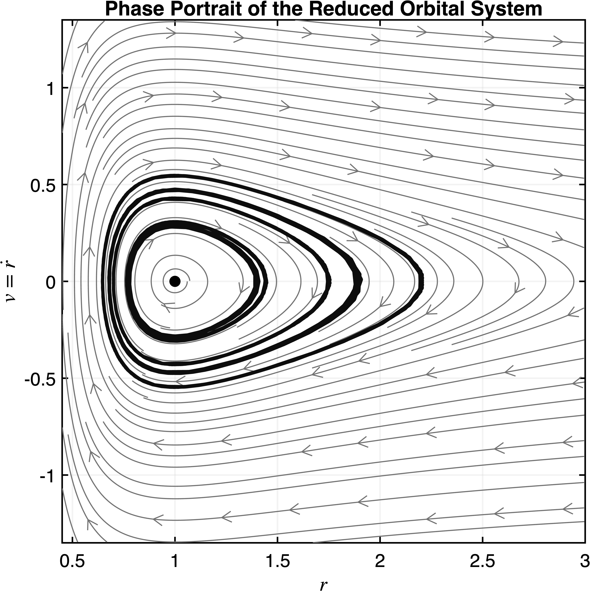

Home | Research | Notes & Thoughts | A Semester Thinking About Dynamical Systems
In Reflection 1, my analysis focused entirely on the radial motion, which allowed me to understand how the distance from the central mass changes in time, including turning points and the distinction between inward and outward motion. Physically, this matched the intuition that a particle may move away from the Earth or fall toward it, and the “±” branches captured these two behaviors. However, as I noted in the first reflection, the system was not truly one-dimensional. Analyzing only $r(t)$ tells me how far the particle is from the origin but not where it is in the plane. Like two different objects could be equidistant from the origin, but actually at completely different locations in space. Without tracking the angular variable $\theta(t)$, the description of the motion is incomplete. So, based on my professor's feedback from Reflection 1, I'm now incorporating the angular component of the motion as well.
To describe the motion in the plane, I use polar coordinates. The position of the particle is determined by two functions:
\[ r(t), \qquad \theta(t). \]
Here, \(r(t)\) measures the distance from the central mass, while \(\theta(t)\) records the angular position. In polar coordinates, the acceleration has radial and angular components
\[ a_r = \ddot r - r\dot\theta^2, \qquad a_\theta = r\ddot\theta + 2\dot r\dot\theta. \]
Since gravity acts only in the radial direction, Newton's second law gives
\[ m(\ddot r - r\dot\theta^2) = -\frac{GMm}{r^2}, \qquad m(r\ddot\theta + 2\dot r\dot\theta)=0. \]
The angular equation simplifies to
\[ r\ddot\theta + 2\dot r\dot\theta = 0. \]
Multiplying by \(r\), this becomes
\[ r^2\ddot\theta + 2r\dot r\dot\theta = 0. \]
But the left-hand side is exactly
\[ \frac{d}{dt}\left(r^2\dot\theta\right)=0. \]
Therefore,
\[ r^2\dot\theta = \ell, \]
where \(\ell\) is the conserved angular momentum per unit mass. Solving for \(\dot\theta\), we get
\[ \dot\theta = \frac{\ell}{r^2}. \]
Substituting this into the radial equation gives
\[ \ddot r - r\left(\frac{\ell}{r^2}\right)^2 = -\frac{GM}{r^2}. \]
Simplifying,
\[ \ddot r = \frac{\ell^2}{r^3} - \frac{GM}{r^2}. \]
Finally, introducing the radial velocity \(v=\dot r\), the system becomes
\[ \dot r = v, \qquad \dot v = \frac{\ell^2}{r^3} - \frac{GM}{r^2}, \qquad \dot\theta = \frac{\ell}{r^2}. \]
At first glance, the system appears to be three-dimensional because it consists of three first-order differential equations:
\[ \dot r = v, \qquad \dot v = \frac{\ell^2}{r^3}-\frac{GM}{r^2}, \qquad \dot\theta = \frac{\ell}{r^2}. \]
When I first derived these equations, it was tempting to conclude that the motion had somehow become three-dimensional. After all, the system now contains three state variables. However, this interpretation kinda is misleading.
Physically, the particle still moves entirely within a two-dimensional plane. Nothing about the orbit has become three-dimensional. The additional dimension appears because the original second-order radial equation has been rewritten as a first-order system through the introduction of the velocity variable \(v=\dot r\).
In other words, state-space dimension counts how many quantities are needed to completely describe the evolution of the system, whereas physical dimension describes the geometry of the motion itself. These are related ideas, but they are not the same thing.
There is another subtle observation hiding inside the equations. Although the system formally contains three state variables, the angular equation
\[ \dot\theta=\frac{\ell}{r^2} \]
does not influence the radial dynamics. The variables \(r\) and \(v\) determine the evolution of the system, while \(\theta\) simply records where the particle happens to be along its orbit.
For this reason, I think of the angular equation as being somewhat "kinematic" in nature. It keeps track of how the orbit sweeps around the origin but it does not affect the structure of the phase portrait itself.
As a result, the qualitative dynamics can be studied entirely in the \((r,v)\)-plane. The angular equation will return later when discussing the geometry of the orbit and Kepler's laws, but for the phase-plane analysis it behaves more like a "bookkeeping differential equation" than active dynamical variable.
This realization was surprisingly memorable for me. Before working through this example, I had never thought carefully about the distinction between physical dimension and state-space dimension. Once I saw it here, it became difficult to unsee. The equations were describing a two-dimensional orbit using a three-dimensional state space, and that subtle distinction completely changed the way I think about dynamical systems.
Although the angular equation does not affect the radial phase portrait in the \((r,v)\)-plane, it is not useless. In fact, it contains important geometric information about the orbit.
From the derivation above, angular momentum conservation gives
\[ r^2\dot\theta = \ell. \]
During a small angular displacement \(d\theta\), the radius vector sweeps out a small sector of area
\[ dA = \frac{1}{2}r^2\,d\theta. \]
Dividing by \(dt\), we obtain the rate at which area is swept out:
\[ \frac{dA}{dt} = \frac{1}{2}r^2\dot\theta. \]
Using \(r^2\dot\theta=\ell\), this becomes
\[ \frac{dA}{dt} = \frac{\ell}{2}. \]
Since \(\ell\) is constant, the area sweep rate is constant. This is exactly Kepler's Second Law: the radius vector sweeps out equal areas in equal times.
Kepler's First Law also emerges from the same polar-coordinate formulation. Substituting \(\dot\theta=\ell/r^2\) into the radial equation and introducing the standard change of variables \(u(\theta)=1/r\) leads to
\[ u'' + u = \frac{GM}{\ell^2}. \]
The full geometric solution of this equation leads into celestial mechanics and the theory of conic sections, which is beyond the scope of this note. However, the key point is that the familiar geometric laws of orbital motion are already encoded and emerges naturally while studying the dynamics.
Up to this point, the discussion has focused primarily on deriving the equations of motion. The next natural question is no longer how the system is obtained, but rather what the system does. This is where the viewpoint of dynamical systems becomes useful. Instead of searching for explicit solutions, the goal is to understand the qualitative behavior of all possible solutions at once.
As discussed in the previous section, the angular equation does not influence the radial dynamics. Therefore the qualitative behavior is completely determined by the reduced system
\[ \dot r = v, \qquad \dot v = \frac{\ell^2}{r^3} - \frac{GM}{r^2}. \]
A useful first step in understanding a nonlinear system is locating its nullclines. The \(r\)-nullcline is obtained from \(\dot r=0\), giving
\[ v=0. \]
The \(v\)-nullcline is obtained from \(\dot v=0\):
\[ \frac{\ell^2}{r^3} - \frac{GM}{r^2} = 0. \]
Assuming \(r>0\), this simplifies to
\[ r_0 = \frac{\ell^2}{GM}. \]
The unique equilibrium point occurs at the intersection of the two nullclines:
\[ (r_0,v_0) = \left( \frac{\ell^2}{GM}, 0 \right). \]
To understand the local behavior near the equilibrium, I linearize the system by computing the Jacobian matrix of the vector field.
Let
\[ f(r,v)=v, \qquad g(r,v) = \frac{\ell^2}{r^3} - \frac{GM}{r^2}. \]
The Jacobian is
\[ J(r,v) = \begin{pmatrix} \frac{\partial f}{\partial r} & \frac{\partial f}{\partial v} \\ \frac{\partial g}{\partial r} & \frac{\partial g}{\partial v} \end{pmatrix}. \]
Computing the partial derivatives gives
\[ \frac{\partial f}{\partial r}=0, \qquad \frac{\partial f}{\partial v}=1, \]
\[ \frac{\partial g}{\partial r} = -\frac{3\ell^2}{r^4} + \frac{2GM}{r^3}, \qquad \frac{\partial g}{\partial v}=0. \]
Evaluating at the equilibrium \(r_0=\ell^2/(GM)\) yields
\[ J(r_0,v_0) = \begin{pmatrix} 0 & 1\\ -\frac{(GM)^4}{\ell^6} & 0 \end{pmatrix}. \]
The characteristic equation becomes
\[ \lambda^2 + \frac{(GM)^4}{\ell^6} = 0, \]
with eigenvalues
\[ \lambda_{1,2} = \pm i\frac{(GM)^2}{\ell^3}. \]
The eigenvalues are purely imaginary. Equivalently,
\[ \operatorname{tr}(J)=0, \qquad \det(J)>0. \]
Both viewpoints lead to the same conclusion: the equilibrium is a center. Nearby trajectories neither converge toward the equilibrium nor diverge away from it. Instead, they move around it in closed loops.
This classification is easier to understand visually through the phase portrait. The vector field suggests rotation around the equilibrium, and the sample trajectories form closed curves rather than spiraling inward or outward.

Phase portrait of the reduced orbital system in the \((r,v)\)-plane. The equilibrium is a center, and nearby trajectories form closed orbits around it.
At first glance, this agrees with the linearized picture: the equilibrium behaves like a center. However, there is an important issue. Since the eigenvalues are purely imaginary, the equilibrium is non-hyperbolic. Therefore, the Hartman-Grobman Theorem does not apply.